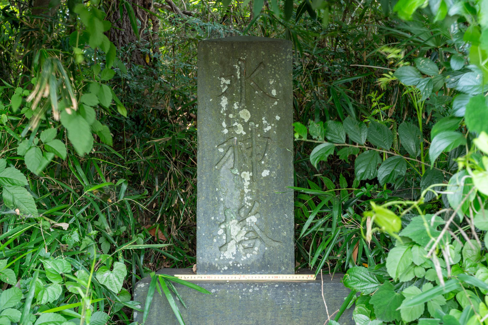
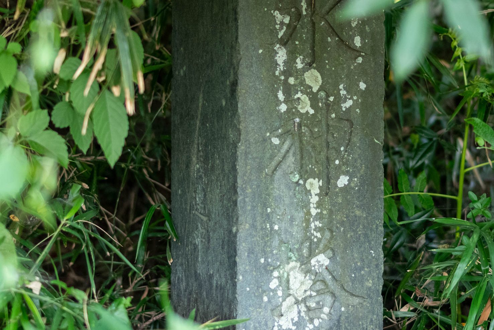

上唐子月田橋近傍の水神塔


基本情報
| 種別 | 水神碑 |
|---|---|
| 建立年 | 不明も、古老によると文政年間 1818-1830年 |
| 大きさ | 高さ80cm 幅29cm 厚30cm |
| 所在地 | 埼玉県東松山市下唐子1675-5 |
| 座標 | 36.03056598, 139.33664832 |
| 標高 | 未調査 |
| 備考 | — |
碑文
水神塔
上唐子邨
筏連中
保存状態
地理・浸水情報
| 最寄り河川 | 未調査 |
|---|---|
| 河川からの距離 | 未調査 |
| 浸水想定区域 | 未調査 |
| 想定浸水深 | 未調査 |
| 標高・水位 | 標高未調査 ／ 水位範囲未調査 |
調査メモ
月田橋畔に祀られている。
「東松山市史編さん調査報告 第17集 (都幾川・越辺川流域の民俗)」が書かれたのは1979年だがこの文献によると、そのころ土砂に埋まった台座を掘り出したところ、下記の48名が判明したという1。
以下は現地に建てられた説明板の内容である。
水神塔
昭和五十五年三月五日 東松山市指定文化財
上唐子地区内都幾川の北岸月田橋の下に、支流槻川を含む都幾川
の筏連中の建てた水神塔がある。横三〇㌢㍍、縦二九㌢㍍、高さ八
〇㌢㍍の上部が尖った石塔で、前面に水神塔、横に上唐子邨、筏連
中と刻されている。台座は横六四・五㌢㍍、縦六二・五㌢㍍、高さ
三五・五㌢㍍で、側面にこれを祀った筏連中十七ヶ村、四十八名の
氏名が刻されている。
世話人 石川縫左衛門
小川 清五郎
神戸村 石工新左衛門
根岸村 根岸 勇蔵
将軍沢村 鯨井五右衛門
鎌形村 杉田宅右衛門
同 金兵衛
岩沢彦兵衛
長嶋源右衛門
同 儀八
目黒村 小野田金兵衛
比留間庄藏
小輪瀬直吉
千手堂村 関根源左衛門
遠山村 山下 茂七
同 平吾
杉田民右衛門
久留半右衛門
下青鳥村 岡部 幾八
石橋村 山田 倉蔵
上唐子村 石川彦治郎
同 弁蔵
岩田治郎左衛門
下唐子村 中村四郎左衛門
同 松三郎
同 宗左衛門
長谷部彦兵衛
小川武左衛門
同 常八
同 留吉
関原長左衛門
神戸村 野口善太郎
新井勝次郎
嶋村文右衛門
大野源兵衛
吉沢岩右衛門
大蔵村 金井広治郎
下里村 大沢乙治郎
田中大三郎
安藤清五郎
山口茂兵衛
新井重五郎
同 幸助
同 金右衛門
玉川村 田仲杢左衛門
番匠村 正木儀右衛門
一市村 栗原武兵衛
元宿村 岡田勝治郎
この人々は都幾川筋の元締を中心とする筏関係者で、当時川筋全
体の組織がつくられ、盛んな筏流しが行われていたことが偲ばれる。
建立年月日が不明であるが、刻された人々が大概現在の六代前の
人々であり、古老の話からも文政年間の建立と考えられる。
都幾川、槻川筋の山々から伐り出された木材（主に松材）は、両
川の合流する畠山館跡の地点までサナガシされ、これより下流のも
のは月田橋・鞍掛・稲荷橋などのドバにカリダシされ、筏に組まれ
て東京は千住まで流され、深川の木場へと送られた。
ここに水神を祀ったのは、この辺りが川巾も広く良い筏カケバで
あり、渡船場でもあったことからと思われる。
昭和五十七年三月 東松山市教育委員会
-
東松山市市史編さん課「松山市史編さん調査報告 第17集 (都幾川・越辺川流域の民俗)」 pp.35-36（コマ番号27-28） \url{https://dl.ndl.go.jp/pid/9641668}. ↩